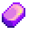
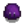
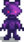
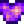

Iridium Bar
| Iridium Bar | |||||||||||
 |
|||||||||||
| A bar of pure iridium. | |||||||||||
| Information | |||||||||||
| Source | Furnace Golden Fishing Treasure Chests  Purple Slime (0.9%) Iridium Golem (3%, rolled twice) Statue Of Endless Fortune |
||||||||||
|
|||||||||||
| Crafting | |||||||||||
| Equipment | |||||||||||
| Processing Time | |||||||||||
| Ingredients | |||||||||||
An Iridium Bar is created primarily by smelting 5  Iridium Ore and 1
Iridium Ore and 1  Coal in a Furnace. It can also be obtained in a variety of other ways.
Coal in a Furnace. It can also be obtained in a variety of other ways.
An Iridium Bar can be shipped or sold to Clint at the Blacksmith Shop for  1,000g, or
1,000g, or  1,500g with the Blacksmith Profession.
1,500g with the Blacksmith Profession.
Iridium Bars can be used for upgrading tools, crafting, building and trading. 3 Iridium Bars are used to re-forge Trinkets.
Locations
Aside from smelting Iridium Ore and Coal in a Furnace, Iridium Bars can be found in:
- 0.9% chance from Purple Slimes.
- 0.2% chance from Shadow Shaman and Shadow Brutes.
- 0.8% chance from Iridium Bats.
- 3% chance from Iridium Golems on the Wilderness Farm map (rolled twice).
- 7% chance for 1-5 to be found in Golden Fishing Treasure Chests.[1]
- 3.6% chance for 2-3 to be found in Skull Cavern treasure rooms.
- 25% chance from the Statue Of Endless Fortune each day it is not a villager's birthday.
- Obtained as a prize from the Prize Machine.
- Sold by the Traveling Cart for
 3,000–5,000g.
3,000–5,000g. - Received as a gift from Clint at the Feast of the Winter Star.
- 2 are sold by Maru in her shop at the Desert Festival for
 50 Calico Eggs each.
50 Calico Eggs each.
Tool Upgrades
Iridium Bars are required for the final upgrade of tools.
| Image | Name | Cost | Ingredients |
|---|---|---|---|
| Iridium Hoe | |||
| Iridium Pickaxe | |||
| Iridium Axe | |||
| Iridium Watering Can | |||
| Iridium Trash Can | |||
| Iridium Pan |
Crafting
| Image | Name | Description | Ingredients | Recipe Source |
|---|---|---|---|---|
| Iridium Sprinkler | Waters the 24 adjacent tiles every morning. | |||
| Iridium Band | Glows, attracts items, and increases attack damage by 10%. | |||
| Crystalarium | Insert a gem of your choice and it will grow copies. | |||
| Slime Incubator | Hatches slimes eggs into slimes. Allows you to raise slimes outdoors. | |||
| Wedding Ring | An old Zuzu City tradition... It's used to ask for another farmer's hand in marriage. Note: Multiplayer only |
|||
| Deluxe Fertilizer (5) | Greatly improves soil quality, increasing your chance to grow quality crops. Mix into tilled soil. | |||
| Hopper | Items placed inside will automatically be loaded into the machine in front of it. | |||
| Statue Of The Dwarf King | Choose from two mining-related powers each day. | |||
| Mini-Forge | Now, you can use a dwarvish forge from the convenience of your home. |
Buildings
Iridium bars are used in these buildings purchased from the Carpenter's Shop and the Wizard's Tower.
| Image | Name | Description | Cost | Size |
|---|---|---|---|---|
 |
Slime Hutch | Raise up to 20 slimes. Fill water troughs and slimes will create slime balls. | 7x4 | |
| Earth Obelisk | Warps you to the mountains. | 3x2 | ||
| Water Obelisk | Warps you to the beach. | 3x2 | ||
| Desert Obelisk | Warps you to the desert. | 3x2 | ||
| Island Obelisk | Warps you to Ginger Island. | 3x2 |
Gifting
| Villager Reactions
| |
|---|---|
| Love | |
| Like | |
| Dislike | |
| Hate | |
Bundles
Iridium Bar may be an option in the  remixed Dye Bundle on the Bulletin Board.
remixed Dye Bundle on the Bulletin Board.
Tailoring
An Iridium Bar is used in the spool of the Sewing Machine with Cloth in the feed to create an 
Quests
- The Wizard requests an Iridium Bar by mail on the 5th of Winter (year 2) in the "Staff of Power" Quest. The reward is 5,000g and 1 Friendship heart.
- 1 Iridium Bar is requested by Lava Eel in a Fish Pond quest to increase the capacity of the pond from 7 to 10.
- Willy's Boat needs 5 Iridium Bars to repair the anchor.
Trading
- 10 Iridium Bars can be traded at the Desert Trader for the Warp Totem: Desert recipe.
- 15 Iridium Bars can be traded at the Desert Trader for the Midnight Beach Bed.
- 30 Iridium Bars can be traded at the Desert Trader for the Midnight Beach Double Bed.
Trivia
- In real life, iridium is a rare silver, brittle metal that can be hazardous in a fine dust and has toxic radioactive isotopes. It is often used to produce hard, durable surfaces for high-precision tools and machine parts. It is the second densest naturally occurring element, just behind osmium, and almost twice as dense as lead.
References
- ↑ See FishingRod::openTreasureMenuEndFunction in the game code.
History
- 1.0: Introduced.
- 1.1: Used as a building material to the Water Obelisk and Earth Obelisk.
- 1.3.27: Used as an ingredient to the Wedding Ring recipe.
- 1.4: Used as a building material to the Desert Obelisk. Added Iridium Trash can upgrade. Can now be used in Tailoring. Can be requested in Lava Eel Fish Pond quest.
- 1.5: Used as a building material to the Island Obelisk and as an ingredient to the Deluxe Fertilizer and Hopper recipes. Is now an option in the remixed Dye Bundle.
- 1.6: Used as an ingredient to Mini-Forge and Statue Of The Dwarf King recipes. Can now be obtained from Golden Fishing Treasure Chests. Added Iridium Pan upgrade. Now used to re-forge Trinkets. Can be obtained from Iridium Golems. Now purchasable at Desert Festival. Can now be traded for the Midnight Beach Bed and Midnight Beach Double Bed. Can now be obtained as a prize from the Prize Machine. Now liked by Wizard.
| Resources | |
|---|---|
| Basic | Battery Pack • Bone Fragment • Cinder Shard • Clay • Coal • Fiber • Hardwood • Moss • Stone • Wood |
| Ore | Copper Ore • Iron Ore • Gold Ore • Iridium Ore • Radioactive Ore |
| Bars | Copper Bar • Iron Bar • Gold Bar • Iridium Bar • Radioactive Bar • Refined Quartz |